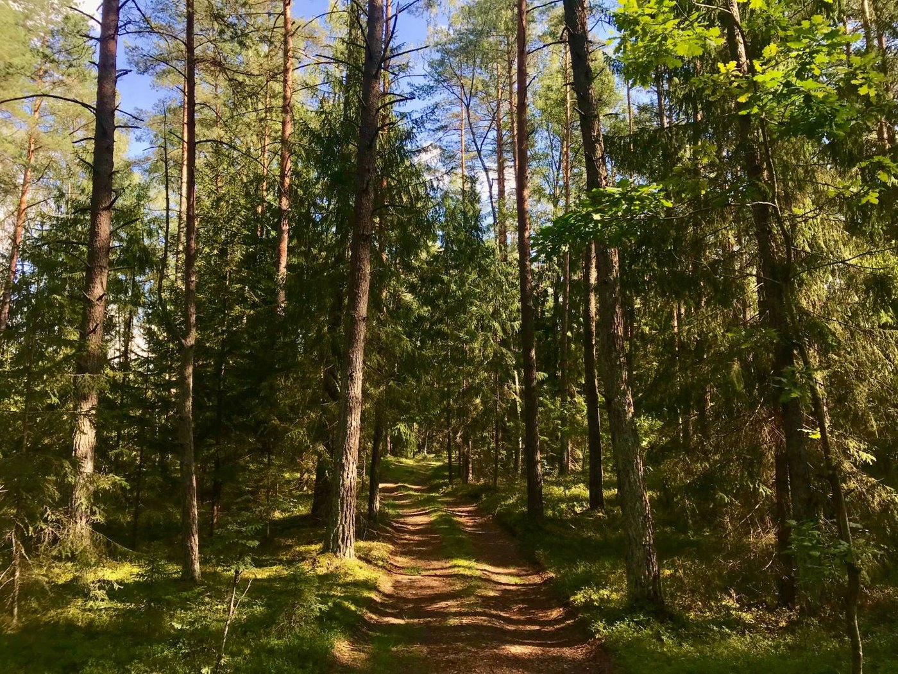

Pradžia / Temos / Savo kelio paieškos
Savo kelio paieškos
Tiems, kurie klausia, kas jie yra ir kaip norėtų gyventi.
Kaip tai gali jaustis
Kartais iš šalies gyvenimas atrodo gerai, bet kažkas vis tiek netinka. Darbas, miestas, santykiai ar planai, kuriuos susidarėte prieš daug metų.
Klausimai „kas aš?“, „ko iš tikrųjų noriu?“ ir „kas man svarbu?“ gali išmušti iš vėžių. Bet jie taip pat gali būti pradžia gyvenimo, kuris labiau jaučiasi jūsų.
Tai labai artima mano darbo būdui. Egzistenciniame-humanistiniame požiūryje nėra teisingų atsakymų, duodamų iš šalies. Žiūrime į jūsų vertybes, pasirinkimus ir baimes, kad rastumėte savo atsakymus.
Kas dažnai būna sunkiausia
- Dideli sprendimai
Karjeros keitimas, persikraustymas, santykių pabaiga ar pradžia. Prieš apsisprendžiant galime pažiūrėti, kas jus traukia į kiekvieną pusę.
- Gyvenimas pagal kitų lūkesčius
Šeima, kultūra ar jūsų pačių seni planai gali sukurti gyvenimą, kuris nebetinka. Galime tyrinėti, ką rinktumėtės patys.
- Tapatybė
Tai, kas esate, laikui bėgant gali keistis, taip pat ir seksualumas ar lytinė tapatybė. Esu LGBTQ+ draugiška psichologė, tad tai galite tyrinėti savo tempu.
- Prasmė
Tuštumos ar sąstingio jausmas, net kai viskas sekasi. Galime pažiūrėti, kas jūsų dienoms suteikia svorio ir ko trūksta.
Daugiau apie tai, kaip aš dirbu.
Kada geriau tiktų kita pagalba
Aš galiu netikti, jei ieškote krizės intervencijos, oficialios diagnozės, medikamentinio gydymo ar jo tikslinimo arba labai struktūruotų trumpalaikių konsultacijų. Tokiais atvejais galėčiau tik nukreipti jus pas tinkamesnį specialistą.
Praktinė informacija
- Trukmė
- 50 minučių
- Kaina
- 50 € klientams Lietuvoje, 80 € klientams užsienyje
- Kur
- Internetu, lietuvių arba anglų kalba
- Pirmas žingsnis
- Nemokamas 20 minučių pokalbis, skirtas pasitikrinti, ar tinkame vienas kitam, ir pradėti formuoti konsultacijų tikslus